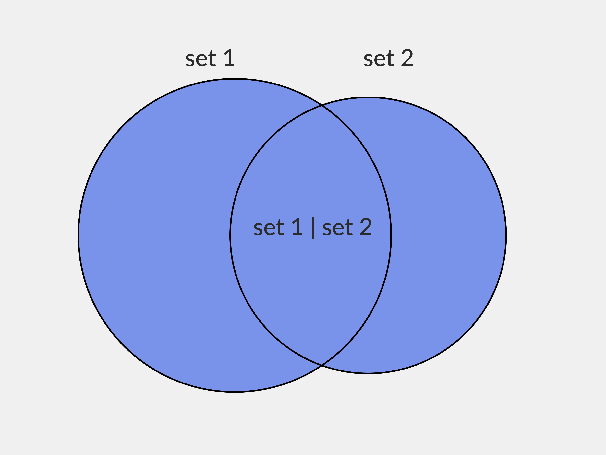

Множество (set) — это изменяемый набор уникальных и неупорядоченных элементов. Представьте, что вы пришли на пляж и собрали в пакет коллекцию ракушек — каждая ракушка отличается от другой и не имеет чётко обозначенного места в пакете. Такую коллекцию можно совершенно легитимно назвать множеством :)
Перечислим основные свойства множеств:
- Уникальность: каждый элемент множества неповторим. Если попробовать создать в наборе дубликат, Python не даст этого сделать.
- Неупорядоченность: у элементов множества нет порядкового номера.
- Изменяемость: можно добавлять во множество или удалять из него элементы.
Так как множества неупорядоченны, вы не сможете получить элемент по индексу, как в случае с кортежами и списками. Зато можно очень быстро проверить наличие элемента в коллекции: когда «ракушки» не пронумерованы, компьютеру не нужно рассматривать каждую по отдельности — можно посмотреть сразу всю коллекцию.
А ещё set используют, когда нужно очистить данные от дубликатов. Например, если вы спарсили с сайта список повторяющихся номеров телефонов, можно превратить его во множество — после этого все копии исчезнут.
Какие объекты можно добавить во множество
Множества могут содержать только неизменяемые объекты:
- целые числа (integer);
- числа с плавающей точкой (float);
- строки (string);
- кортежи (tuple).
Дело в том, что данные хранятся во множестве не в первозданном виде, а в виде хеша — то есть уникального битового массива. Так компьютеру проще искать элементы в коллекции. Однако, чтобы этот процесс работал, каждый элемент должен всегда выдавать одно и то же значение.
Именно поэтому объектами множества не могут быть списки (list), словари (dict), и другие типы данных, которые могут перезаписываться во время работы программы.
Создание множеств
Их можно создавать по-разному.
Способ 1: с помощью фигурных скобок
Внутри скобок разместите элементы, которые надо включить в множество. Если вы поместите в скобки повторяющиеся элементы, ошибки не будет, но в коллекции дубликаты не сохранятся.
my_set = {1, 2, 2, 3, 4, 4, 5}
print(my_set) # Результат {1, 2, 3, 4, 5}
Важно: если не прописать аргументы в фигурных скобках, получится пустой словарь, а не пустое множество, как можно было бы предположить. Если же вам нужно именно пустое множество, используйте функцию set().
Способ 2: с помощью функции set()
Встроенная функция set() принимает один аргумент — итерируемый объект (список, кортеж, строку или другой объект) — и возвращает множество его элементов. Чтобы создать пустую коллекцию, используйте set() без аргументов.
Вот так создаются множества из списка:
my_set = set([1, 2, 3, 4, 4, 5, 5])
print(my_set)
# Результат {1, 2, 3, 4, 5}
А вот так — из строк:
my_string = "Hello, World!"
my_set = set(my_string)
print(my_set)
# Результат: {'H', 'e', ' ', '!', 'o', 'r', 'l', ',', 'd', 'W'}
Видно, что каждый символ строки становится объектом множества. Повторяющиеся символы при этом не добавляются.
Создание множества из кортежа:
my_tuple = (1, 2, 2, 3, 4, 5, 5)
my_set = set(my_tuple)
print(my_set)
#Результат: {1, 2, 3, 4, 5}
Создание множества из диапазона (range):
my_range = range(1, 6)
my_set = set(my_range)
print(my_set)
# Результат: {1, 2, 3, 4, 5}
Из числа множество создать не удастся — предварительно надо будет превратить его в строку с помощью функции str().
my_num = 101598723
my_set = set(str(my_num))
print(my_set) # Результат: {'7', '3', '8', '5', '0', '1', '2', '9'}
Если попробовать сделать множество из словаря, сохранятся только его ключи — значения в набор не войдут.
dict1 = {'a': 1, 'b': 2, 'c': 3}
my_set= set(dict1)
print(my_set) # Вывод: {'a', 'b', 'c'}
Способ 3: с помощью генератора
Быстрый и удобный способ создавать множества. Чтобы понять, в чём его прелесть, сравним создание множества с использованием генератора и с заполнением через цикл:
# Использование генератора
even_squares = {x**2 for x in range(10) if x % 2 == 0}
print(even_squares) # Вывод: {0, 4, 16, 36, 64}
# Заполнение с помощью цикла
even_squares = set()
for x in range(10):
if x % 2 == 0:
even_squares.add(x**2)
print(even_squares) # Вывод: {0, 4, 16, 36, 64}
Видно, что синтаксис генератора гораздо лаконичнее. Использование этого способа улучшает читаемость кода и снижает вероятность ошибок при его поддержке.
Способ 4: создание замороженного множества (frozenset)
frozenset() — это неизменяемый вариант множества, то есть добавить в него или удалить из него элементы не выйдет. Создать его можно так:
my_set = frozenset([1, 2, 3, 4, 5])
print(my_set) # результат: frozenset({1, 2, 3, 4, 5})
Как добавить элементы во множество
Для добавления элементов можно использовать сразу три метода: add(), update(), union().
Метод add() добавляет во множество один объект.
s = {1, 2, 3}
s.add(4)
print(s) # Выводит {1, 2, 3, 4}
Метод update() позволяет добавить сразу несколько элементов. Аргументом может быть список, строка или другой итерируемый объект.
s = {1, 2, 3}
s.update([4, 5, 6])
print(s) # Выводит {1, 2, 3, 4, 5, 6}
Множества в Python можно объединять друг с другом — для этого используют метод union(). Если в двух наборах есть повторяющиеся объекты, в их «гибриде» останется только один.
set1 = {1, 2, 3}
set2 = {3, 4, 5}
set3 = set1.union(set2)
print(set3) # Вывод: {1, 2, 3, 4, 5}
Удаление элементов множества
Для удаления элементов множества используются встроенные методы remove (), discard(), clear() и pop(). Разберём каждый из них по очереди.
Метод remove() удаляет элемент из множества. Если такого элемента в наборе не окажется, интерпретатор выдаст исключение.
s = {1, 2, 3, 4, 5}
s.remove(3)
print(s) # Выводит {1, 2, 4, 5}
s.remove(8) # KeyError: 8
Метод discard() работает безопаснее — если элемент не найден, исключения не выпадет.
s = {1, 2, 3, 4, 5}
s.discard(3)
print(s) # {1, 2, 4, 5}
Метод pop() удаляет случайный компонент множества.
s = {1, 2, 3, 4, 5}
print(s.pop())
print(s) # выводит {2, 3, 4, 5}
Если же вы хотите полностью очистить множество, используйте метод clear().
s = {1, 2, 3, 4, 5}
s.clear()
print(s) # set()
Операции над математическими множествами
Тип данных set поддерживает операции с математическими множествами: объединение, пересечение, разность и симметрическую разность.
Объединение множеств
Чтобы объединить несколько множеств в Python, используется уже знакомый нам метод union(), а также оператор |.
В результате получается новый набор, который содержит все уникальные элементы из каждого множества.
set1 = {1, 2, 3}
set2 = {3, 4, 5}
set3 = set1 | set2
print(set3) # Вывод: {1, 2, 3, 4, 5}

Изображение: Skillbox Media
Пересечение множеств
Пересечение множеств в Python можно получить двумя способами: с помощью метода intersection() и с помощью оператора &. Оба возвращают новую коллекцию, содержащую только те элементы, что есть в двух исходных множествах. Если таковых не найдётся, получится пустая коллекция.
set1 = {1, 2, 3, 4}
set2 = {3, 4, 5, 6}
set3 = set1.intersection(set2)
print(set3) # {3, 4}
set3 = set1 & set2
print(set3) # {3, 4}
В примере выше множества set1 и set2 имеют общие объекты 3 и 4, поэтому результатом их пересечения будет {3, 4}.

Изображение: Skillbox Media
Чтобы удалить из исходного множества несовпадающие элементы, используют метод intersection_update() или оператор &=.
set1 = {1, 2, 3, 4}
set2 = {3, 4, 5, 6}
set1.intersection_update(set2)
print(set1) # {3, 4}
set1 &= set2
print(set1) # {3, 4}
Разность множеств
Разность — это набор элементов, которые принадлежат первому множеству, но не принадлежат второму. Другими словами, её можно представить как результат вычитания второго множества из первого.
Чтобы получить разность, используется метод difference() или оператор -.
set1 = {"apple", "banana", "cherry"}
set2 = {"banana", "orange", "mango"}
set3 = set1 - set2
print(set3) # Выведет {'cherry', 'apple'}
set3 = set1.difference(set2)
print(set3) # Выведет {'cherry', 'apple'}

Изображение: Skillbox Media
Чтобы удалить из множества совпадающие элементы, используйте метод difference_update() или оператор -=.
set1 = {"apple", "banana", "cherry"}
set2 = {"banana", "orange", "mango"}
set1 -= set2
print(set1) # Выведет {'apple', 'cherry'}
set1 = {"apple", "banana", "cherry"}
set1.difference_update(set2)
print(set1) # Выведет {'apple', 'cherry'}
Симметрическая разность множеств
Симметрическая разность — это набор элементов, которые принадлежат либо первому, либо второму множеству, но не их пересечению. Иными словами, симметрическая разность содержит все элементы обоих множеств, кроме общих.
В Python симметрическую разность можно найти с помощью метода symmetric_difference() или оператора ^.
a = {"apple", "banana", "cherry"}
b = {"banana", "orange", "mango"}
c = a ^ b
print(c)
# Выведет {'apple', 'cherry','orange','mango'}
c = a.symmetric_difference(b)
print(c)
# Выведет {'apple', 'cherry','orange','mango'}

Изображение: Skillbox Media
Чтобы удалить из множества общие элементы, используйте метод symmetric_difference_update() или оператор ^=.
a = {"apple", "banana", "cherry"}
b = {"banana", "orange", "mango"}
a ^= b
print(a)
a = {"apple", "banana", "cherry"}
a.symmetric_difference_update(b)
print(a)
# В обоих случаях выведет {'orange' 'cherry', 'apple', 'mango'}
Как проверить наличие элементов во множествах
Чтобы проверить, есть ли элементы в наборе, можно использовать функции len() и bool().
Функция len() возвращает длину множества. Если длина равна 0, коллекция пустая.
set1 = set()
print(len(set1)) # Возвращает 0.
set1 = {1, 2, 3}
print(len(set1)) # Возвращает 3.
Функция bool() возвращает False, если множество пустое, и True, если нет.
set1 = set()
print(bool(set1)) # Возвращает False. Множество пустое
set1 = {1, 2, 3}
print(bool(set1)) # Возвращает True. Множество непустое
Сравнение множеств
Сравнивать множества можно с помощью операторов == (равенство)
и !=
(неравенство). Первый проверяет, есть ли в множествах
общие объекты, а второй — есть ли различающиеся.
set1 = {1,2,3,4}
set2 = {4,3,2,1}
set3 = {1,2,3,5}
print(set1 == set2) #выведет True
print(set1 == set3) #выведет False
print(set1 != set3) #выведет True
print(set1 != set2) #выведет False
Для сравнения множеств также используются операторы >, >=, <, <=. О них мы расскажем ниже, когда будем рассматривать подмножества и надмножества.
Как проверить принадлежность элемента множеству
Для этого в Python используется оператор in. Он возвращает True, если элемент присутствует в коллекции, и False, если отсутствует.
Также можно использовать оператор not in, чтобы убедиться, что объект не принадлежит множеству.
my_set = {1, 2, 3, 4, 5}
print(4 in my_set) # вывод: True, потому что 4 есть в множестве
print(6 in my_set) # вывод: False, потому что 6 нет в множестве
print(6 not in my_set) # вывод: True
print(4 not in my_set) # вывод: False
Как проверить, является ли одно множество подмножеством другого
В Python есть инструменты и для этого: метод issubset(), а также операторы >, >=, < и <=.
Метод issubset() возвращает True, если все элементы одного множества присутствуют в другом, и False — если нет.
set1 = {1, 2, 3}
set2 = {1, 2, 3, 4, 5}
set3 = {1, 2, 3}
set4 = {1, 2, 5, 8}
print(set1.issubset(set2)) # Вывод: True
print(set1.issubset(set3)) # Вывод: True
print(set1.issubset(set4)) # Вывод: False
Получается, что в этом примере set1 — это подмножество set2, так как все элементы set1 присутствуют в set2. При этом set1 не является подмножеством set4, потому что в set1 есть один уникальный элемент.
Если оба множества равны (set1 = set3), метод issubset() возвращает True.
Другой способ — использовать операторы < (меньше) и <= (меньше или равно). Эти операторы проверяют, является ли «левое» множество подмножеством «правого». Если наборы идентичны, оператор < возвращает False, а оператор <= — True.
set1 = {1,2,3}
set2 = {1,2,3,4,5}
set3 = {1,2,3}
print(set1 <= set2) #выведет True, так как set2 включает в себя set1
print(set1 < set2) #выведет True, так как set1 — подмножество set2, и set1 != set2
print(set1 < set3) #выведет False, так как set1 и set3 — одинаковые множества
Напротив, чтобы проверить, является ли одно множество надмножеством другого, используются операторы >= (больше или равно) и > (больше). Если они идентичны, оператор > вернёт False, а оператор >= — True.
set1 = {1,2,3,4,5}
set2 = {1,2,3}
set3 = {1,2,3,4,5}
print(set1 >= set2) #выведет True, так как set1 содержит в себе set2
print(set1 > set2) #выведет True, так как set1 — надмножество set2 и set1 != set2
print(set1 > set3) #выведет False, потому что set1 и set3 — одинаковые множества